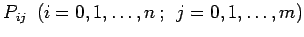
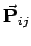

Inhalt Index DeskTop Bronstein

 Numerische Mathematik Darstellung von Kurven und Flächen mit Hilfe von Splines Bernstein-Bézier-Darstellung von Kurven und Flächen
Numerische Mathematik Darstellung von Kurven und Flächen mit Hilfe von Splines Bernstein-Bézier-Darstellung von Kurven und Flächen


Gegeben seien Punkte  mit den Ortsvektoren , die als Netzpunkte einer Fläche längs Parameterlinien aufgefaßt werden können. Analog zu den B-B-Kurven (19.252) ordnet man den Netzpunkten durch
eine Fläche zu. Die Darstellung (19.253) ist für den Flächenentwurf geeignet, da auf einfache Weise durch die Veränderung von Netzpunkten eine Variation der Fläche möglich ist. Allerdings ist der Einfluß aller Netzpunkte global, so daß man auch in (19.253) von den BERNSTEINschen Grundpolynomen zu B-Splines übergehen sollte.